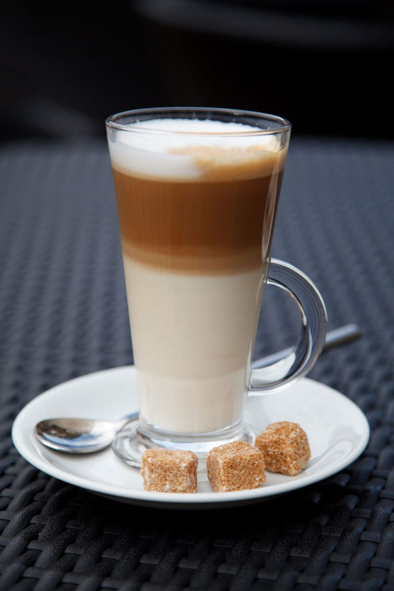
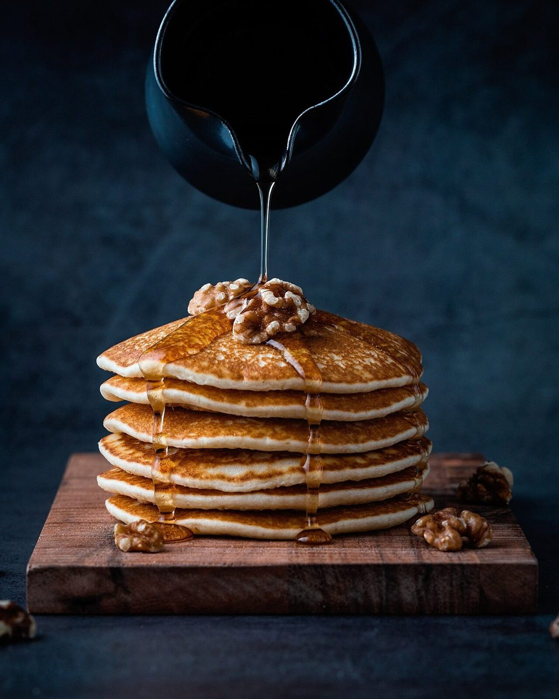

写真は喫茶まわりのイメージです。お店のものではありません。
制作側の連想
整理券発行機の部位を、配置図にしてみる
このサイトは、順番を待つときに使う整理券の発行機を図にしたつもりで作りました。六つの部位に番号をふり、上の図と並べています。制作側の連想で、お店の理念・由来とは無関係です。実際の機器の仕様を示すものでもありません。
凡例
六つの部位
- 1発券ボタン押すと整理券が出る、本体いちばん大きな丸いボタン。
- 2案内表示券の取りかたなどを知らせる、前面上部の表示面。
- 3取り出し口出てきた整理券を受け取る、横長のスリット。
- 4ロール紙券のもとになる、本体の中に収まる巻いた紙。
- 5カッター紙を一枚ぶんずつ切り離す、のこぎり状の刃。
- 6筐体ボタンや紙を収める、本体全体の箱。
ギャラリー(イメージ)
ラテとパンの写真


写真は飲みものとパンのイメージです。お店で提供している商品を示すものではありません。
ご案内
お店のこと(確認できたものだけ)
| 所在地 | 〒624-0914 京都府舞鶴市下安久666 |
|---|---|
| 電話 | 準備中 |
| 営業時間 | 準備中 |
| 定休日 | 準備中 |
| ご予約 | 準備中 |
| 駐車場 | 準備中 |
| SNS | Instagram @r.coco.maizuru |